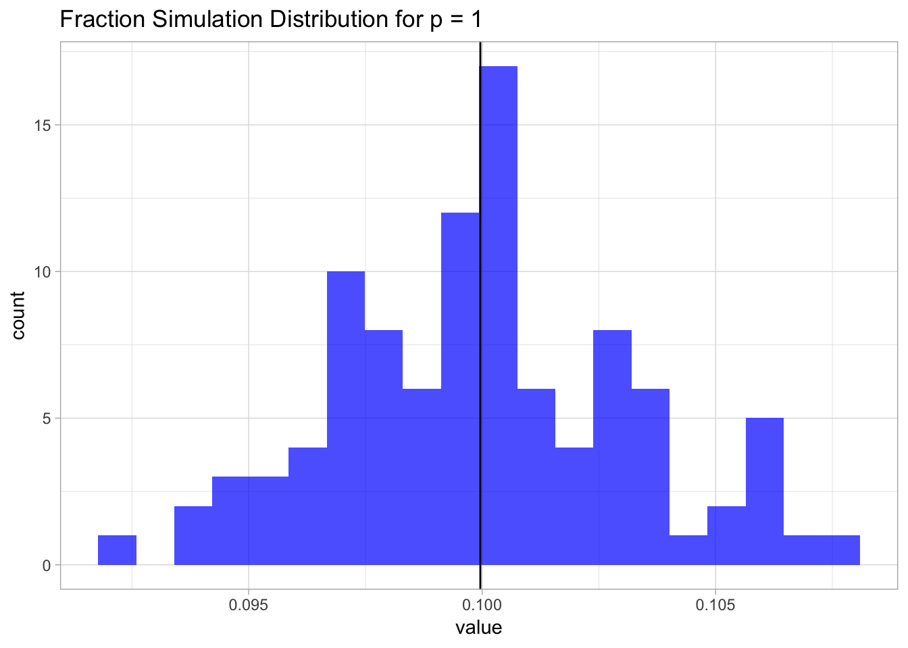
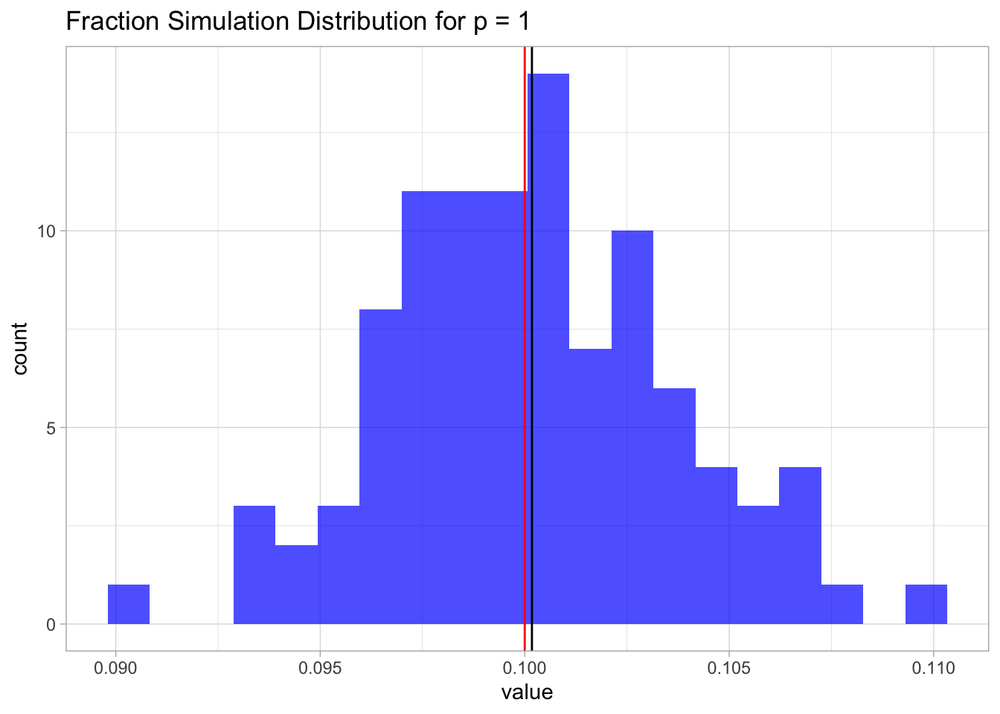
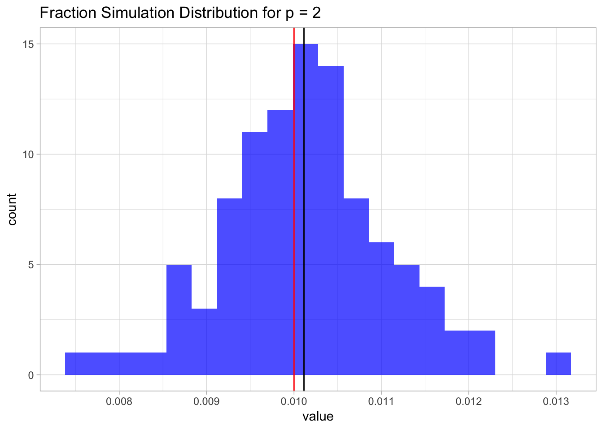
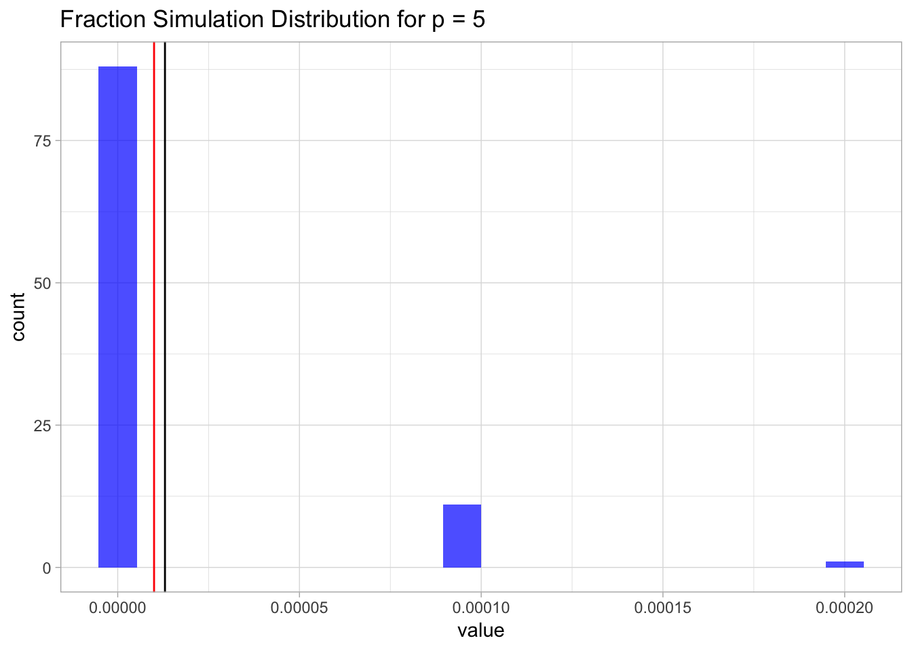
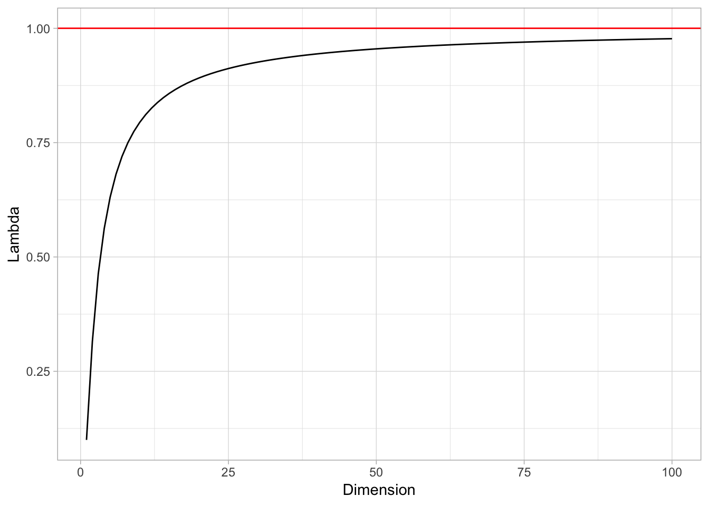
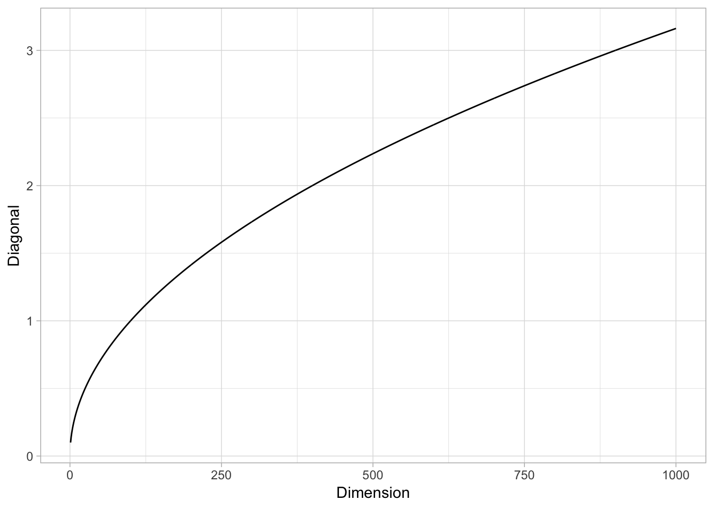

In this post I want to present the notion of curse of dimensionality following a suggested excercise (Chapter 4 - Ex. 4) of the book An Introduction to Statistical Learning, writen by Gareth James, Daniela Witten, Trevor Hastie and Robert Tibshirani.
When the number of features \(p\) is large, there tends to be a deterioration in the performance of KNN and other local approaches that perform prediction using only observations that are near the test observation for which a prediction must be made. This phenomenon is known as the curse of dimensionality, and it ties into the fact that non-parametric approaches often perform poorly when \(p\) is large. We will now investigate this curse.
- Suppose that we have a set of observations, each with measurements on \(p = 1\) feature, \(X\). We assume that \(X\) is uniformly (evenly) distributed on \([0,1]\). Associated with each observation is a response value. Suppose that we wish to predict a test observation’s response using only observations that are within \(10\)% of the range of \(X\) closest to that test observation. For instance, in order to predict the response for a test observation with \(X = 0.6\) we will use observations in the range \([0.55,0.65]\). On average, what fraction of the available observations will we use to make the prediction?
Let us prepare the notebook.
library(glue)
library(tidyverse)Let \(\lambda:= 0.1\) represent the locality input parameter. i.e \(10\)%.
lambda <- 0.1Let us generate \(X\), i.e. the sample observations.
# Set dimension.
p <- 1
# Number of sample points.
n0 = 100
# Generate observation matrix
X <- runif(n = n0, min = 0, max = 1) %>% matrix(ncol = p)Given \(z_0 \in [0,1]\), let us define a function which returns the \(\lambda\)-interval. We need to consider separate cases, depending wether the \(z_0\) has distance less than \(\lambda/2\) to some of the boundary points.
GenerateInterval <- function (z0, lambda) {
#'Generate lambda-interval
#'
#'@param z0 point in the unit interval.
#'@param lambda locality parameter.
#'@return lambda-interval of z0.
if (z0 < lambda/2) {
u.min <- 0
u.max <- lambda
} else if (z0 < 1 - lambda/2) {
u.min <- z0 - lambda/2
u.max <- z0 + lambda/2
} else {
u.min <- 1 - lambda
u.max <- 1
}
interval <- c(u.min, u.max)
return(interval)
}Let us consider some examples:
z0 <- 0.6
GenerateInterval(z0 = z0, lambda = lambda)## [1] 0.55 0.65z0 <- 0
GenerateInterval(z0 = z0, lambda = lambda)## [1] 0.0 0.1Now let us write a function which verifies if a point \(x \in [0,1]\) belongs to a given interval.
IsInInterval <- function (x, interval) {
#'Evaluate wether a given point belongs to the given interval.
#'
#'@param x point in the unit interval.
#'@param interval vector of length two indicating interval limits.
#'@return boolean indicating wether x belongs to the given interval.
(( x > interval[1] ) & ( x < interval[2] ))
}For example,
z0 <- 0.6
interval <- GenerateInterval(z0 = z0, lambda = lambda)IsInInterval(x = 0.5, interval = interval)## [1] FALSEIsInInterval(x = 0.57, interval = interval)## [1] TRUENext, given any point and an observation matrix \(X\) we want to count the number of points in the sample which belong to the \(\lambda\)-interval of the point.
CountAvailableObservations <- function (z0, X, lambda) {
#' Count observations in the lambda-interval of a point.
#'
#'@param z0 point in the unit interval.
#'@param X observation matrix.
#'@return number of samples in the lambda-interval of z0.
interval <- GenerateInterval(z0 = z0, lambda = lambda)
condition <- IsInInterval(x = X, interval = interval)
count.obs <- X[condition] %>% length
return(count.obs)
}Now we write a simulation function.
RunSimulation1 <- function(lambda, n0, n1, N) {
#' Run simulation.
#'
#'@param lambda locality parameter.
#'@param z0 point in the unit interval.
#'@param n0 number of samples in the observation matrix.
#'@param n1 number of samples in the prediction matrix.
#'@param N number of times to run the count.
#'@return vector of fraction counts.
# Run over simulation iterations.
1:N %>% map_dbl(.f = function(k) {
# Generate random observation samples.
X <- runif(n = n0, min = 0, max = 1)
# Generate prediction grid.
sample.grid <- runif(n = n1, min = 0, max = 1)
sample.grid %>%
map_dbl(.f = ~ CountAvailableObservations(z0 = .x, X= X, lambda = lambda)) %>%
mean
}) / n1
}Let us plot the distribution.
sim.1 <- RunSimulation1(lambda = 0.1,
n0 = 100,
n1 = 100,
N = 100)
mean.sim.1 <- mean(sim.1)
sim.1 %>%
as_tibble() %>%
ggplot() +
theme_light() +
geom_histogram(mapping = aes(x = value),
fill = 'blue',
alpha = 0.7,
bins = 20) +
geom_vline(xintercept = mean.sim.1) +
ggtitle(label = 'Fraction Simulation Distribution for p = 1')
This result is not surprising. Since the samples are uniformly distributed on \([0,1]\), the fraction is going to be, on average, equal to the length of an interval of length \(\lambda\), which in this case is just \(0.1\).
sim.1 %>%
as_tibble() %>%
ggplot() +
theme_light() +
geom_histogram(mapping = aes(x = value),
fill = 'blue',
alpha = 0.7,
bins = 20) +
geom_vline(xintercept = mean.sim.1) +
geom_vline(xintercept = lambda, color = 'red') +
ggtitle(label = 'Fraction Simulation Distribution for p = 1')
- Now suppose that we have a set of observations, each with measurements on \(p = 2\) features, \(X_1\) and \(X_2\). We assume that \((X_1,X_2)\) are uniformly distributed on \([0,1]\times [0,1]\). We wish to predict a test observation’s response using only observations that are within \(10\)% of the range of \(X_1\) and within \(10\)% of the range of \(X_2\) closest to that test observation. For instance, in order to predict the response for a test observation with \(X_1 = 0.6\) and \(X2 = 0.35\), we will use observations in the range \([0.55, 0.65]\) for \(X_1\) and in the range \([0.3, 0.4]\) for \(X_2\). On average, what fraction of the available observations will we use to make the prediction?
We argue similarly as above. We write a simulation function for all \(p>0\).
RunSimulationP <- function(lambda, p, n0, n1, N) {
#' Run simulation.
#'
#'@param lambda locality parameter.
#'@param z0 point in the unit interval.
#'@param n0 number of samples in the observation matrix.
#'@param n1 number of samples in the prediction matrix.
#'@param N number of times to run the count.
#'@return vector of fraction counts.
# Run over simulation iterations.
1:N %>% map_dbl(.f = function(k) {
# Generate random observation samples.
X <- runif(n = p*n0, min = 0, max = 1) %>% matrix(ncol = p)
# Generate prediction grid.
sample.grid <- runif(n = p*n1, min = 0, max = 1) %>% matrix(ncol = p)
fraction.vect <- sapply(X = 1:n0, FUN = function(i) {
condition.matrix <- sapply(X = 1:p, FUN = function(j) {
# Select a point on the grid.
z0 <- sample.grid[i, j]
# Compute its interval.
interval<- GenerateInterval(z0 = z0, lambda = lambda)
# Check which values in the grid belong to the lambda-interval.
IsInInterval(x = X[, j], interval = interval)
})
# Define condition matrix for each dimension.
condition.vect <- condition.matrix %>%
as_tibble %>%
mutate_all(.funs = as.numeric) %>%
rowSums
# Select points which belong to the lambda-hypercube
# and then compute the fraction.
(condition.vect[condition.vect == p] %>% length) / n0
})
return(mean(fraction.vect))
})
}Let us run the simulation.
p <- 2
sim.2 <- RunSimulationP(lambda = lambda,
p = p,
n0 = 100,
n1 = 100,
N = 100)
mean.sim.2 <- mean(sim.2)
mean.sim.2 ## [1] 0.009875Again, since the samples are uniformly distributed on \([0,1]\times [0,1]\), this fraction is going to be, on average, equal to the are of a square of length \(\lambda\), which in this case is just \(0.1^2 = 0.01\).
Let us plot the distribution.
sim.2%>%
as_tibble() %>%
ggplot() +
theme_light() +
geom_histogram(mapping = aes(x = value),
fill = 'blue',
alpha = 0.7,
bins = 20) +
geom_vline(xintercept = mean.sim.2) +
geom_vline(xintercept = lambda^p, color = 'red') +
ggtitle(label = glue('Fraction Simulation Distribution for p = {p}'))
- Now suppose that we have a set of observations on \(p = 100\) features. Again the observations are uniformly distributed on each feature, and again each feature ranges in value from \(0\) to \(1\). We wish to predict a test observation’s response using observations within the \(10\)% of each feature’s range that is closest to that test observation. What fraction of the available observations will we use to make the prediction?
We run the simulation first for \(p=5\).
p <- 5
sim.p <- RunSimulationP(lambda = lambda,
p = p,
n0 = 100,
n1 = 100,
N = 100)
mean.sim.p <- mean(sim.p)Let us plot the distribution.
sim.p %>%
as_tibble() %>%
ggplot() +
theme_light() +
geom_histogram(mapping = aes(x = value),
fill = 'blue',
alpha = 0.7,
bins = 20) +
geom_vline(xintercept = mean.sim.p) +
geom_vline(xintercept = lambda^p, color = 'red') +
ggtitle(label = glue('Fraction Simulation Distribution for p = {p}'))
For \(p=100\) we will just get zero (a very small number).
- Using your answers to parts (a) - (c), argue that a drawback of KNN when \(p\) is large is that there are very few training observations “near” any given test observation.
As we have seen from (a) - (c), on average, the fraction of available observations used to make the prediction equals the volume of a \(p\)-dimensional hypercube of size \(\lambda\), which equals \(\lambda^p\). As this volume satisfies,
\[ \lim_{p\rightarrow \infty} \lambda^p = 0, \] this means that when \(p\) is large there are very few training observations “near” any given test observation. This fact makes the prediction not robust.
- Now suppose that we wish to make a prediction for a test observation by creating a \(p\)-dimensional hypercube centered around the test observation that contains, on average, \(10\)% of the training observations. For \(p = 1,2\), and \(100\), what is the length of each side of the hypercube?
In this case we want to solve for \(\lambda\) in the equation \(\lambda^p=0.1\), i.e. \(\lambda = 0.1^{1/p}\).
- \(p=1\)
p <- 1
0.1^{1/p}## [1] 0.1- \(p=2\)
p <- 2
0.1^{1/p}## [1] 0.3162278- \(p=100\)
p <- 100
0.1^{1/p}## [1] 0.9772372Let us see the values of lambda as a function of \(p\).
tibble(Dimension = 1:100) %>%
mutate(Lambda = 0.1^(1/Dimension)) %>%
ggplot() +
theme_light() +
geom_line(mapping = aes(x = Dimension, y = Lambda)) +
geom_hline(yintercept = 1, color = 'red')
That is, the side of the hypercube should grow almost to 1! This means that the “locality” is lost.
Remark: It is interesting to see that, even if the volume of the \(\lambda\)-hypercube tends to zero when \(p\) is large, the length of its diagonal (defined as the distance between two oposite corners) grows to \(+\infty\). Indeed, it is easy to verify that the diagonal length is \(\lambda \sqrt{p}\) (e.g. using induction).
tibble(Dimension = 1:1000) %>%
mutate(Diagonal = sqrt(Dimension)*lambda) %>%
ggplot() +
theme_light() +
geom_line(mapping = aes(x = Dimension, y = Diagonal))